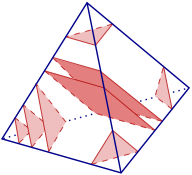
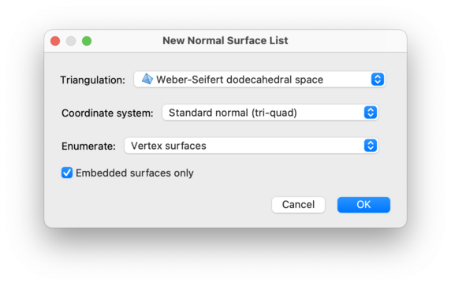
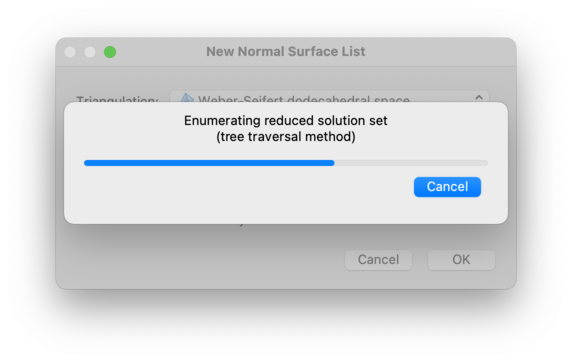

Normal Surfaces and Hypersurfaces | |
| Prev | Next |
In this chapter we deal with normal surfaces within 3-manifold triangulations, and normal hypersurfaces within 4-manifold triangulations. For an overview of normal surface theory in the context of 3-manifolds (where it is much more developed), see [HLP99].

A normal surface within a 3-manifold triangulation
T is a surface that meets each tetrahedron of
T in a (possibly empty) collection of
triangles and/or quadrilaterals, where:
each triangle “truncates” one vertex of the tetrahedron, separating it from the opposite triangle;
each quadrilateral separates two opposite edges of the tetrahedron.
See the illustration to the right for examples.
Likewise, a normal hypersurface within a 4-manifold
triangulation T meets each pentachoron of
T in a (possibly empty) collection of
tetrahedra and/or prisms, where:
each tetrahedron “truncates” one vertex of the pentachoron, separating it from the opposite 3-face;
each prism “truncates” one edge of the pentachoron, separating it from the opposite 2-face.
Regina typically works with properly embedded normal surfaces and hypersurfaces, but it also offers basic support for immersed and singular surfaces. In the context of 3-manifolds, Regina can also work with almost normal surfaces (which are like normal surfaces but with an extra “exceptional disc”), and spun-normal surfaces (with infinitely many triangles spinning out towards the vertices).
For almost normal surfaces, Regina uses the restricted definition of Thompson [Tho94] where the exceptional piece is an octagon. Regina does not currently support the more general definition of Rubinstein [Rub95] in which the exceptional piece may be either an octagon or a tube.
Normal (hyper)surfaces are stored in lists, which typically represent all vertex or fundamental normal (hyper)surfaces within a triangulation, defined relative to some normal or almost normal coordinate system.
To create a new normal surface or hypersurface list, select either → or → from the menu (or press the corresponding toolbar button).
You will be offered the usual new packet window, as shown below.

There are several details that you must provide:
- Triangulation
This is the triangulation that will contain your normal (hyper)surfaces. For a normal surface list, you may chose either one of Regina's native 3-manifold triangulation packets, or one of its hybrid SnapPea triangulation packets. For a normal hypersurface list, you must choose a 4-manifold triangulation. Either way, the new normal (hyper)surface list will appear within the packet tree as a child of the selected triangulation.
- Coordinate system
This is the coordinate system that Regina will use to enumerate normal surfaces or hypersurfaces.
Your choice of coordinate system will affect which kinds of surfaces appear in the final solution set. For instance: within a 3-manifold triangulation, spun-normal surfaces can only appear in quadrilateral and quadrilateral-octagon coordinates, and some other types of surfaces (such as vertex links) will only appear in standard normal and standard almost normal coordinates.
For normal surfaces in 3-manifold triangulations, the available coordinate systems are:
- Standard normal (tri-quad)
This is the standard 7
n-dimensional coordinate system that typically appears in papers and textbooks (wherenis the number of tetrahedra). Each tetrahedron contributes four triangle and three quadrilateral coordinates.- Standard almost normal (tri-quad-oct)
This is a 10
n-dimensional system that extends standard normal coordinates by also adding three octagon coordinates per tetrahedron.This system supports almost normal surfaces.
- Quad normal
These are the 3
n-dimensional quadrilateral coordinates, obtained from standard normal coordinates by simply ignoring all triangles. See [Tol98] or [Bur09a] for details.This system supports spun-normal surfaces.
- Quad-oct almost normal
These are the 6
n-dimensional quadrilateral-octagon coordinates, likewise obtained from standard almost normal coordinates by ignoring all triangles. See [Bur10b] for details.This system supports both almost normal surfaces and spun-normal surfaces.
- Closed quad (non-spun)
These are the same 3
n-dimensional quadrilateral coordinates as before, but the enumeration includes extra constraints to ensure the list includes closed surfaces only. The resulting solution space is the spaceQ0, as described in [BCT13], and will not contain any spun-normal surfaces.This coordinate system can only be used with oriented ideal triangulations that have precisely one torus cusp and no other boundary components or internal vertices. Regina will tell you if you try to use this coordinate system with a triangulation that is not suitable.
- Closed quad-oct (non-spun)
These are the same 6
n-dimensional quadrilateral-octagon coordinates as before, but the enumeration includes extra constraints to ensure the list includes closed surfaces only. The resulting solution space will not contain any spun-normal surfaces. See [BCT13] for further information on the normal (as opposed to almost normal) variant of this coordinate system.Like closed quad coordinates, this coordinate system can only be used with oriented ideal triangulations that have precisely one torus cusp and no other boundary components or internal vertices. Regina will tell you if you try to use this coordinate system with a triangulation that is not suitable.
This system supports almost normal surfaces.
For normal hypersurfaces in 4-manifold triangulations, the available coordinate systems are:
- Standard normal (tet-prism)
This is a 15
n-dimensional coordinate system, wherenis the number of pentachora in the underlying triangulation. Each pentachoron contributes five tetrahedron and ten prism coordinates, corresponding to the five vertices and ten edges respectively of the pentachoron that these tetrahedra and prisms truncate.- Prism normal
These are the 10
n-dimensional prism coordinates, obtained from standard normal coordinates by simply ignoring all tetrahedron coordinates.This is analogous to quad coordinates for normal surfaces. Like quad coordinates, if the underlying manifold is compact then the tetrahedron coordinates can be reconstructed up to the addition and/or removal of vertex links.
- Enumerate
Here you indicate whether you wish to enumerate all vertex normal (hyper)surfaces, or all fundamental normal (hyper)surfaces. Fundamental (hyper)surfaces are much slower to enumerate than vertex (hyper)surfaces, but in some settings they can offer significantly more information.
- Vertex (hyper)surfaces
These correspond to the extreme rays of the normal (hyper)surface solution cone: in the chosen coordinate system, a vertex normal (hyper)surface cannot be expressed as a non-negative linear combination of normal (hyper)surfaces other than multiples of itself.
Regina will only compute one (hyper)surface for each extreme ray—specifically, the smallest integer vector along each ray. This means that the coordinates of each vertex (hyper)surface will have greatest common divisor one.
- Fundamental (hyper)surfaces
These correspond to the Hilbert basis of the normal (hyper)surface solution cone: in the chosen coordinate system, a fundamental normal (hyper)surface cannot be expressed as a sum of normal (hyper)surfaces other than zero and itself.
- Embedded (hyper)surfaces only
If this box is checked (the default), this indicates that you are only interested in properly embedded (hyper)surfaces. This is consistent with most of the normal surface literature.
If unchecked, this indicates that you are interested not only in properly embedded normal (hyper)surfaces, but also immersed and singular (hyper)surfaces. Regina currently offers only very basic support for such (hyper)surfaces—it will not even tell you which are immersed and which are singular; moreover, the enumeration process could become much slower.
Once you are ready, click and Regina will enumerate all normal surfaces or hypersurfaces according to your selection. When this is finished, Regina will package the results into a normal surface or hypersurface list and open it for you to view.

Note
If you selected an almost normal coordinate system, Regina will enforce at most one octagon type but it will not enforce precisely one octagon disc (this makes it easier for users to work with convex combinations of vertex almost normal surfaces). As a result, you might see surfaces with multiple octagons (but all of the same type), or surfaces with no octagons at all. The coordinate viewer makes it easy to spot which is which.
Warning
If you have a data file from Regina 4.5.1 or earlier, it will not show almost normal surfaces with more than one octagon. See the discussion on legacy coordinates for details.
| Prev | Contents | Next |
| Analysis and Modification | Up | Analysis |